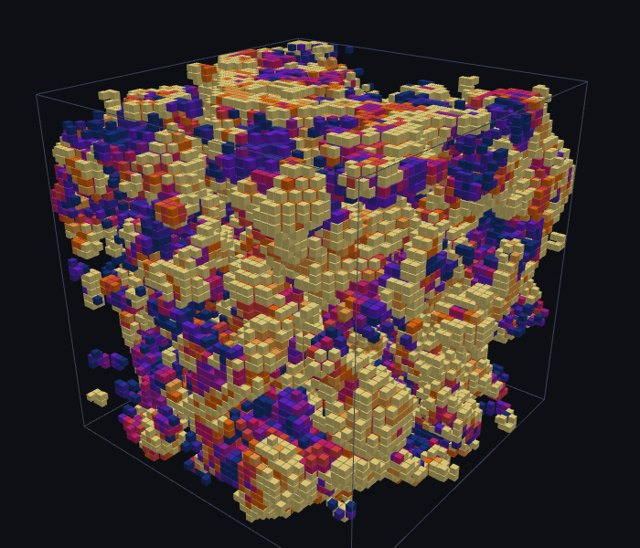
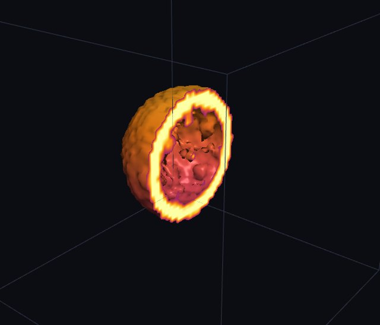

3D Automata Lab
Two interactive simulations of artificial life in three dimensions. Change the rules while they run, slice them open, and see what grows. Everything runs in your browser.

3D Cellular Automata
Discrete cells on a cubic grid. Edit birth and survival rules, add multi-state decay, and explore classic rules, including Carter Bays' 3D Game of Life.
Open simulation →
3D Lenia
Continuous space, state and time. Shape the kernel and growth function, watch blob-like creatures form, and slice through them to see their internal structure.
Open simulation →